GNU Radio and the ADALM2000
The board is the instrument. IIO is how you talk to it.
Our Roadmap
- Crawl — IIO, and a loopback on the board's own generator
- Walk — the M2K blocks, and what each parameter writes
- Run — an SPI bus on the digital pins
We will follow a crawl, walk, run approach. The crawl is a loopback: the board's own generator into the board's own input, so a station with no other hardware still has something to measure. The walk is what a block parameter writes. The run is a protocol on the digital pins.
Setup is short and happens before the session: install the M2K drivers and download the flowgraphs. Nothing else gets installed in the room.
Press P to switch between the projected deck and these notes. The notes are always in the page, in both modes — the deck view hides them, it never drops them. Printing gives you the notes, one frame per sheet.
IIO
Industrial I/O: the kernel's answer to "what is this converter, and what is it set to?"
What IIO is
- Kernel subsystem for ADCs, DACs, sensors
- One driver model, one sysfs layout, one sample path
- A thermometer, a scope front end, a software radio — same shape
libiio over it. gr-iio over that — in GNU Radio since 3.10.
The reason IIO matters to this room is not that it is the only way to
reach an ADALM2000 — it is that it is the same way you reach almost
anything else. A driver in drivers/iio/ publishes its channels and
its attributes into sysfs, and libiio serves those over USB, over a
network, or from the local filesystem. The backend changes; the
names do not.
That is the whole bet of this workshop. Learn the naming rules once, and the next board — an AD9361 transceiver, an ADXL345 accelerometer, a pressure sensor — presents itself the same way.
The M2K in particular is normally reached over the network backend, as a
USB ethernet gadget at a fixed address. It advertises nothing, so it is not
discoverable: you name it, ip:192.168.2.1.
Four nouns, and that is the whole model
context ip:192.168.2.1
└── device m2k-adc
└── channel voltage0
└── attribute raw
scale
sampling_frequency- context — a board
- device — one converter in it
- channel — one signal
- attribute — one knob, or one reading
Attributes live at two levels, and the difference bites people: a
device attribute applies to the whole converter
(sampling_frequency is usually one of these), a channel
attribute applies to one signal (scale, raw). There are
also context attributes, which on the M2K carry the factory calibration
constants — cal,ad9963_adc_ch0_gain and friends.
iio_info prints all of it and is already on your machine if libiio
is. ./iio_discover.py --json in the repo captures the same tree to a file so you can read it later, on a laptop with no board attached — which is
how twenty people share one M2K.
An attribute whose name ends _available is not a knob. It is the list of legal values for the knob whose name it shares, published by the hardware itself. The generated GRC dropdowns come from that list.
A _raw value is not a measurement
real value = (raw + offset) × scale
- Offset before scale, not after
- Offset in counts; scale converts counts to the unit
The ABI fixes the unit. voltage → millivolts.
temp → millidegrees.
If a participant remembers one thing from the IIO half of this session, this is a good candidate. Every plausible-looking wrong answer in an IIO flowgraph comes from a number still in counts that something downstream reads as volts, or from applying the offset on the wrong side of the multiply.
The sub-unit choice is deliberate: the values are integers, so
millivolts and millidegrees keep useful resolution without floating point
in the kernel. Twenty-four channel types have a fixed unit this way; the
full table is in docs/reading-iio-attributes.md, generated from the
kernel's own ABI documentation by iio_explain.py --glossary.
The M2K is where this rule runs out. Its scope does not
publish a usable scale — libm2k computes the conversion itself, and
volts-per-count turns out to depend on the sample rate through the
decimation filter's gain. That is the subject of m2k_scale.py, and
it is the reason the analog blocks exist at all.
The name is a sentence
{in|out}_{type}{index}[_{modifier}]_{info}
in_voltage0_raw a reading, channel 0, in counts
out_altvoltage1_frequency a generated tone
in_voltage0-voltage1_raw a differential pairin_— into the device, a measurementout_— out of it, a generator- a dash — two pins differenced, not one against ground
The grammar is worth teaching because it makes an unfamiliar attribute
readable without documentation. in_temp0_calibbias parses on sight:
a calibration offset, in counts, on the device's first temperature channel.
iio_explain.py does exactly this parse and then quotes the kernel's
own words for the info part — 826 documented attribute names, fetched
from Documentation/ABI/testing/sysfs-bus-iio and cached in the repo so
it works offline.
One trap for later: gr-iio resolves each key in its Parameters
field with iio_device_identify_filename(), so the key has to be the
full sysfs filename. libiio will report a channel attribute to you as
scale; the block needs in_voltage0_scale. Getting that wrong is
silent.
What gr-iio gives you, and what it does not
- Eight parameters. About two can be guessed
- Every field wants a value that lives somewhere else
A general-purpose block cannot know what a board is.
| parameter | the problem |
|---|---|
IIO context URI | no example of a legal value |
Device Name/ID | which devices exist, spelled how? |
PHY Device | "PHY" means nothing here |
Channels | a Python list you must already know |
Decimation | factor, or samples dropped? |
Parameters | free text, unguessable naming rule |
This is not a complaint about gr-iio. The block is correct and it is
general, and general is what an in-tree block has to be. But a participant
opening it for the first time has no way to make progress, because every
field wants a value that lives somewhere else — in iio_info output,
in a driver, in a datasheet.
There are two ways to close that gap. One is a discovery tool that shows
you the tree and hands you the field values: iio_browse.py in the
repo does that, and it can generate a GRC block definition from a capture,
dropdowns and all, because the legal values are in the capture already.
The other is to stop asking the participant to think in IIO at all, and
give them a block that speaks the instrument's language instead. That is
gr-m2k, and it is the next part.
Where meaning comes from
Reference. Every line iio_explain.py prints is tagged with its source,
so fact, convention and guesswork stay distinguishable.
| tag | source | trust |
|---|---|---|
[abi] | the Linux IIO ABI, quoted verbatim | definitive, true of every IIO device |
[parsed] | the attribute name itself | certain |
[driver] | the driver named the channel | rare, trustworthy when present |
[libm2k] | the vendor's library drives this attribute | says which instrument it belongs to |
[overlay: sourced] | traced to vendor source | good, not bench-checked |
[overlay: UNVERIFIED] | written from documentation | do not teach as fact |
./iio_explain.py FILE --unknown reports how much of a capture is
explained and by what. On the real M2K capture that is 57%: real hardware
exposes a great deal the ABI never described, mostly logic-analyzer trigger
attributes.
The ADALM2000
A bench in a box — and, underneath, fourteen IIO devices that have never heard of each other.
One board, six instruments
- Scope — 2 channels, 100 MS/s
- Generator — 2 channels, 75 MS/s
- 16 digital pins, in or out
- Two power rails
It costs $200, and it is the input device for everything else in this room.
Every other board sits on its input side. The M2K is the instrument; nothing else is.
The unit on the bench for this material is a Rev.D with a Zynq 7010 and
firmware v0.33, reached over the network backend at
ip:192.168.2.1. USB passthrough is not in use.
Choosing the M2K as the input device solves a scarcity problem as much as a pedagogical one. Twenty participants can each have a board that is a scope, a generator and a logic analyzer at once, and the interesting hardware — the colorimeter, the ultrasonic transducers — can be a single instructor unit feeding many receive-only stations.
It also puts a real constraint in front of the room: the board is 12-bit, it is rate-limited, and it is wrong about its own volts until you calibrate it.
Underneath, it is not an instrument at all
- One context. Fourteen IIO devices
- Nothing in the tree says which one is "the scope"
- One Scopy knob can span three of them
m2k-adc the scope's samples
m2k-adc-trigger when it starts
m2k-fabric input range, power-down
m2k-dac-a m2k-dac-b the two generators
m2k-dds their tone mode
m2k-logic-analyzer-rx digital in
m2k-logic-analyzer-tx digital out
ad9963 ad5627 ad5625 pll xadcThis is the gap the workshop exists to close. "Set the scope's input
range to ±2.5 V" is one knob in Scopy. In IIO it is an attribute on
m2k-fabric, while the samples come from m2k-adc and the trigger
lives on m2k-adc-trigger — three devices for one idea.
That is also the concrete reason a stock IIO Device Source cannot
express an M2K scope channel: its params field writes to exactly one
device. Three devices need three blocks, wired by hand, in the right order.
One more: m2k-logic-analyzer and m2k-logic-analyzer-rx are
different devices, and only the -rx one has scan indices — which means
only the -rx one can stream. libiio cannot buffer a channel that has no scan index, and nothing tells you except silence.
Scopy, and what is under it
- Scopy — ADI's instrument GUI
- built on libm2k, built on libiio
- under that: the attributes we just read
Scopy is the second opinion. Disagree with it and one of you is wrong.
Scopy is not a competitor to what we are building. It is an instrument; GNU Radio is a signal processing environment. Scopy shows you a waveform and will not let you filter it, decode it, demodulate it, or wire its output into anything else.
What Scopy is worth to this session is calibration of expectations. It
is the tool everyone in the room can already drive, and every knob in it
has a name we are about to map onto a sysfs attribute. Starting from
"you know what the range control does" is a much shorter walk than
starting from m2k-fabric.
Open it when a measurement looks wrong. The bench work behind these slides did that repeatedly, and each disagreement pointed at a real error.
Scopy's knobs, as sysfs names
gain -> M2kAnalogIn::setRange
Oscilloscope
trigger_level -> M2kHardwareTrigger::setAnalogLevelRaw
Trigger
oversampling_ratio -> M2kAnalogIn::setOversamplingRatio
Oscilloscope- libm2k is the translation table — and machine-readable
- If libm2k touches it, driving the board needs it
- The method name says which instrument
The kernel says what an attribute means. It cannot say whether you will ever need it. For this board libm2k can, because Scopy itself runs on libm2k: anything it reads or writes is something driving the M2K as an instrument requires.
Absence is not a verdict. scale and offset are
not in that table, because libm2k computes the scope's conversion itself
instead of reading them back. That means "not part of this board's
instrument abstraction", not "unimportant" — they remain central to every
other IIO device you will ever meet.
It is a text scan of vendor source, not an API contract. A strong hint about relevance, which is exactly what it is sold as.
Four things the board will not tell you
- The ADC always returns both channels, interleaved.
- The front end comes up powered down — and gives a flat line, not an error.
- Volts-per-count depends on the sample rate.
- Cyclic buffers quantise frequency to multiples of
rate/N.
Every one of these presents as a plausible wrong answer. None of them raises an error.
Interleaving. gr-iio splits a two-channel buffer as if it were one, so the time base runs 2× slow and the result presents as a tone at exactly Nyquist. If you ever see a signal sitting precisely at Nyquist, suspect this first.
Power-down. Clear powerdown on m2k-fabric. An
uninitialised board returns a flat line that looks like a quiet input.
Volts per count. The decimation filter has gain, so the
conversion moves with the rate — and the same correction applies to the
trigger level, which otherwise sits about 9% away from where the scope says
it is. That arithmetic is m2k_scale.py; it is a fixed property of the
converters, not a per-board calibration.
Cyclic quantization. A repeating N-sample buffer can only
produce multiples of rate/N, so asking for 10 kHz gets you 9979.2 Hz
and that is correct behavior, not a defect.
There are a dozen more in the project note, and most of them took a bench session to find. The blocks in the next section exist largely so that a participant does not have to re-find them.
Six new blocks
The instrument, in GNU Radio's vocabulary. Two lines of setup, no build step.
What is in [ADALM2000]
M2K Analog Source
the scope — samples, range, trigger
M2K Analog Sink
the generator
M2K Digital Source
DIO pins in, one port per pin
M2K Digital Sink
DIO pins out
M2K SPI Encode
a message becomes three waveforms
M2K SPI Decode
three waveforms become a message
source gr-m2k/env.sh
gnuradio-companion flowgraphs/m2k_blinky.grcTwo environment variables, no build step, nothing to install.
[ADALM2000] appears in the block tree. That constraint — a workshop
that installs nothing in the room — shaped more of this than any other
single decision.
Beside the six blocks there are two plain Python modules that import
nothing at all: m2k_scale.py holds the counts-to-volts arithmetic and
m2k_calibrate.py is a standalone script that runs once per session. The
SPI encoder and decoder are the same shape — the arithmetic in a module
with no GNU Radio import, and a thirty-line wrapper around it. That is
what makes 472 tests run on a laptop with no board and no gnuradio.
First, make an LED blink

- One LED, two wires, no resistor
- Anode to
DIO0, cathode to ground - If it lights, the blocks loaded and the board is reachable
The blink rate is a property of the stream, not a setting on the board.
This is the go/no-go. Everything in the last two parts — the block
tree, the two search paths, the network context to
ip:192.168.2.1 — is either working or it is not, and an LED
says which from across the room. Do it before any of the six blocks gets
explained: a wrong answer here invalidates the next forty minutes,
and takes ten seconds to find.
The square wave is already the right two values.
GNU Radio's GR_SQR_WAVE runs 0 to amplitude rather than
plus and minus it, so amplitude 1 gives exactly the ones and zeros the
sink wants and Float To Short is the entire conversion. No
threshold, no offset. A sine or a triangle would need both — this is the
one shape that gets away with it.
Nothing in the flowgraph is about blinking. It is a stream of bits arriving at a pin at 100 kS/s, and the LED follows because it has no choice. Drag the slider and the frequency of the signal moves. That sounds like a distinction without a difference until the next slide, where the same pin at the same rate stops blinking altogether.
Seeing it on a scope means throwing samples away. The
canvas above leaves out a fourth branch: the same short stream into
Keep 1 in N with N = 1000, then a time sink. Without
the decimation, 512 points at 100 kS/s is a 5 ms window and a
half-second blink is a flat line. The rate the hardware wants and the rate
a person can read are not the same number — which comes back in every demo
after this one.
On the bench, 2026-09-18: an integrated-resistor LED marked 3–4.5 V on the package, straight off the pin, nothing else on the breadboard. Red, yellow and green work; blue and white drop nearly 3 V unaided and have no headroom left on 3.3 V logic.
Same pin, two blocks more

- A ramp, shifted up by the duty cycle, compared against zero
- On-fraction equals duty to one sample in 100000
- The eye does the averaging; the pin does not
PWM is not a block. It is a ramp and a comparator.
A ramp descending from 0 to −1, shifted up by duty,
is above zero for exactly that fraction of every period. Threshold at zero
and the fraction lands on the pin. GNU Radio ships no PWM block, and this
chain wants none — the same lesson as the previous slide, arrived at from
the other side.
The minus sign is load-bearing. An ascending ramp runs 0 to +1, so adding a positive duty puts the whole period above the threshold: the pin sticks on and the slider does nothing at any setting. From the front of a room that looks like a broken control or a dead board rather than a sign error. There is a test named after it.
1 kHz is chosen, not arbitrary. 100 kS/s over 1 kHz is 100 samples per period, so one sample is one percent and the slider's 0.01 step is exactly one sample wide. Pick a carrier that does not divide the rate and the slider grows dead zones — a brightness control that sticks.
The exercise. Make it fade. Swap Add Const
for a plain Add and feed the second input a triangle at
0.2 Hz with a 0.5 offset. The duty then sweeps 0 to 1 and back, five
seconds each way. Two blocks changed, and it shows that duty was never a
parameter — it was always another stream.
M2K Analog Source
- Every parameter says what it does and what its values are
- No IIO vocabulary anywhere on the block
One block spans three IIO devices. The stock source writes to one.
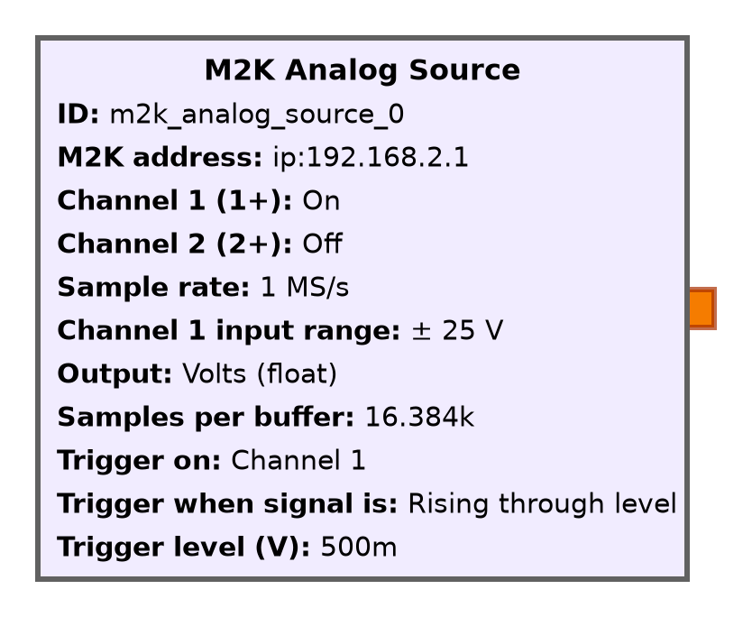
m2k_scope.grc canvas.Every parameter, and the IIO attribute it quietly becomes:
| parameter | quietly becomes |
|---|---|
| M2K address | context URI |
| Channel 1 / 2 on | the channel list |
| Sample rate | sampling_frequency on m2k-adc |
| Input range | gain on m2k-fabric |
| Output: volts / counts | the port's data type |
| Trigger on / when / level | m2k-adc-trigger |
The dropdowns are not hand-written. The hardware publishes
sampling_frequency_available, and that list is what the block offers —
six exact rates from 100 MS/s down to 1 kS/s. An earlier version computed
them as 100 MS/s divided by the oversampling ratio and wrongly excluded
1 kS/s. When the hardware publishes a list, the list wins.
GRC refuses illegal combinations, rather than the board discovering them at run time. No channels enabled, a zero buffer, or — the one that matters — a trigger level outside the input range you picked, which could never fire and about which nothing else would ever complain.
Fields appear and disappear with what they depend on: the trigger condition and level only exist once the trigger is on, and a channel's range field only exists once you enable that channel.
M2K Digital Source / Sink
- 16 DIO pins; a block claims what it needs
- Number of pins 3 → three dropdowns
- Each takes an optional label —
MOSI (DIO7)in an error
The list is the port order, not a range.
A pin is an input or an output. GRC cannot see across two blocks — that one is yours.
Each line also takes an optional label. It changes no
behavior whatever — GRC draws a port's name from the block definition and
will not evaluate a template — but it means a mistake reports itself as
MOSI (DIO7) rather than DIO7.
Nothing here is protocol-aware. Three pins are three pins, whether they are a clock, data and select or a latch strobe beside a data bus. Which of those it is belongs to whatever block reads them next.
The parameters count from 1 and the ports from 0, so Pin 1 is the port
drawn pin0. GRC numbers cloned ports itself and will not take a
template for it — a wart, not a decision.
generate_digital_grc.py writes both block definitions.
Sixteen pins and sixteen names, twice over, is six hundred lines that differ
only by an index, and a source and a sink that drifted apart there would
wire a bus backwards with both halves apparently running. We commit the generated files, and a test fails if they stop matching.
Why the digital sink had to be written
gr-iio's device_sink drives one DIO pin, silently.
- 16 one-bit channels, one 16-bit word
- Each write is full width and erases the last
- Only the highest pin survives. No error
- A three-wire bus needs three pins moving together
- A different question from moving one pin
- The one that failed first on the bench
The full write-up is docs/gr-iio-multipin-sink.md. The symptom is
the worst kind: a flowgraph that runs, a board that acknowledges every
write, and exactly one pin that moves.
Once fixed, the check was coherence, not correctness: send four patterns of period 2, 4, 8 and 16 out on DIO0–3, read DIO4–7 back, and look for one rotation of the sixteen-sample word that fits all of them. If each pin needs a different rotation, the ports have slipped past each other and any bus decoded off them is fiction.
That check also found the rate limit. Non-cyclic digital output is not reliable at 1 MS/s — it underruns in about half of runs. When it does, all three pins break at the same sample rather than drifting apart, so the failure shows up as a gap in all three at once rather than as skew. Use a big transmit buffer: at 1 MS/s a 512-sample buffer is 1953 refills a second over the network, and a dropped one looks exactly like skew.
Three rules the blocks follow
- No IIO vocabulary on the face of a block. Asserted by a test.
- Every dropdown starts at "leave alone." Open a block, close it, nothing is written.
- The legal values come from the hardware.
The meaning travels with the block — the Documentation tab carries the kernel's own words.
Rule 2 is the one that is easy to get wrong. A shown value must never mean a value written to the hardware — otherwise opening a block to read it changes the board's state, and a participant's debugging becomes non-reproducible.
A fourth rule, learned the hard way: quote every option label.
option_labels: [On, Off] silently becomes True / False, because
YAML 1.1 reads those as booleans. There is a test.
And a fifth, same category: GRC's dtype: enum values are raw
strings. '0' + '3' concatenates, int("'6'") raises, and an assert
that raises makes GRC fall back to defaults without saying so.
What has been checked, and what has not
Checked, with no hardware (tests/test_grc_integration.py):
GRC's real loader accepts every block; a flowgraph using one validates and
generates Python that parses; run headless it reaches
RuntimeError: Unable to create context — everything but the board. The
arithmetic is tested with no GNU Radio present, including that the
sample-rate list matches what a real M2K publishes.
Checked on the bench: sections 1–13 of
docs/bench-checklist.md, including a real SPI mode-0 bus over all 256
byte values. Absolute error is closed and meter-verified: input gains within
0.31% of unity, offsets under 1 mV. The generators keep 10–17 mV, because
the internal loopback never sees a DMM's load.
Not checked: the DC power supply block does not exist yet. It
is the one capability GNU Radio does not have at all, and the setpoint spans
four places including the context cal,* attributes.
SPI
Four wires, no addressing, no acknowledgement. The simplest bus worth decoding.
Four wires
| wire | driven by | does |
|---|---|---|
SCLK | controller | says when a bit is valid |
MOSI | controller | the bit |
MISO | peripheral | the bit coming back |
CS | controller | who is being talked to, and when |
- The controller supplies the clock — no baud rate to agree on
- We drive three of the four
- Nothing here answers back
The clock is the agreement.
SPI is a good teaching bus precisely because it has so little in it. There is no addressing — that is what the chip-select line is for. There is no acknowledgement, no error detection, no framing byte, and no defined idle timeout. SPI pushes everything that makes a bus complicated out into "the datasheet says so".
Which means a decoder for it is short enough to read on a slide, and that a mistake in it produces plausible bytes rather than an error. Both of those turn out to matter later.
MISO is left out here because a loopback has nothing to say back. The decoder takes three streams; adding the fourth is a fourth pin and one more line of arithmetic.
Mode 0, in one sentence
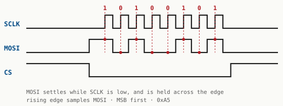
0xA5. MOSI settles while the clock is low and holds across the edge.The clock rests low, and the receiver samples the bit on the rising edge.
- MSB first
- A rising edge with CS asserted is a bit
- That sentence is the whole decoder
The four SPI modes are two independent bits: clock polarity (does the clock idle low or high) and clock phase (is the bit sampled on the first edge or the second). Mode 0 is idle-low, sample-on-first, which is rising-edge sampling — and it is what most peripherals use.
The transmitter's job is the mirror: MOSI settles while SCLK is low, so it is stable by the time the rising edge arrives. Setup and hold, in other words, are the reason the phase bit exists at all.
There is a real hazard hiding in how short that sentence is, and it shows up two sections from now: our encoder and our decoder were both written from it. A shared misreading — LSB first, the falling edge, CS moving half a clock early — round-trips perfectly and is still wrong on a real bus.
Chip select is the framing
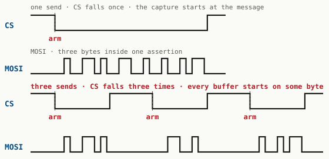
send once; the bottom calls it three times, so a capture armed on that edge can begin at any byte.Eight bits starting anywhere still make a byte — a real, plausible, wrong one.
- So the decoder emits nothing until CS falls
- Leftover bits are dropped, not padded
This is the design decision the rest of the SPI work hangs off, and it was not obvious in advance. The alternative — start decoding from the first clock edge you see — is friendlier, produces output immediately, and is wrong in a way nothing downstream can detect.
One frame is one whole transaction. CS falls once, the encoder clocks every byte of the message out back to back, and CS rises once. Not once per byte. That is what real SPI does anyway, and section 11 of the bench checklist is where we found out it also has to be true here — the story is four frames from now.
A bus made of samples
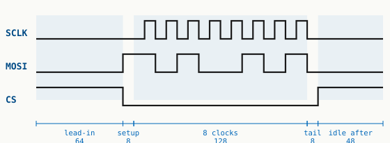
half = 8, and they divide like this.- One bit per sample per pin
- 1 MS/s, 8 samples a half clock → a 62.5 kHz bus
It takes 256 samples to move 8 bits, and you can see every one of them.
| part | samples | what is on the wire |
|---|---|---|
| lead-in | 64 | CS high, clock idle low |
| setup | 8 | CS low, MOSI on bit 7, no clock yet |
| 8 clocks | 128 | 16 samples each: low half, high half |
| tail | 8 | CS still low |
| idle after | 48 | CS back high |
The bus speed is sample_rate / (2 × half). Change
half from 8 to 4 and the bus doubles to 125 kHz; change it to 16 and
it halves. All three have been run on the board.
Verbosity is the pedagogical point, not a defect. The frame is arithmetic over plain Python lists, so a participant can change a number and immediately see the waveform move — and can see, on a scope trace, exactly what "MOSI settles while the clock is low" means.
It also matches what the M2K is. This is a logic analyzer and a pattern generator, not an SPI peripheral. There is no SPI hardware anywhere in the path; there are sixteen pins and a sample clock, and the protocol is arithmetic we do on top.
The flow graph
The map first. Then one block at a time, and what every parameter is for.
The canvas, as GRC draws it
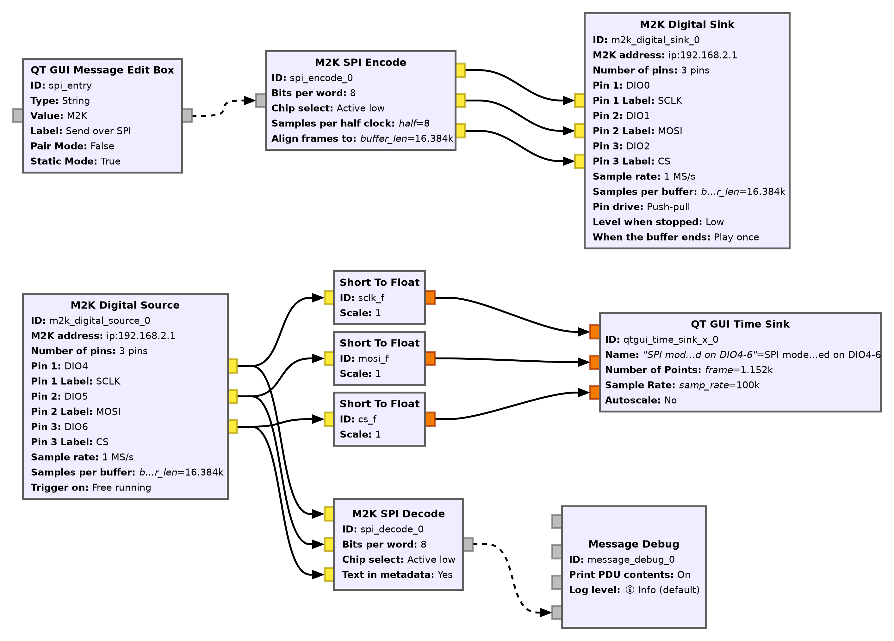
flowgraphs/m2k_spi_loopback.grc.Signal path only. Nothing has been redrawn or rearranged — that figure is this region's own extents. Here is the whole canvas, Options block and variables included:
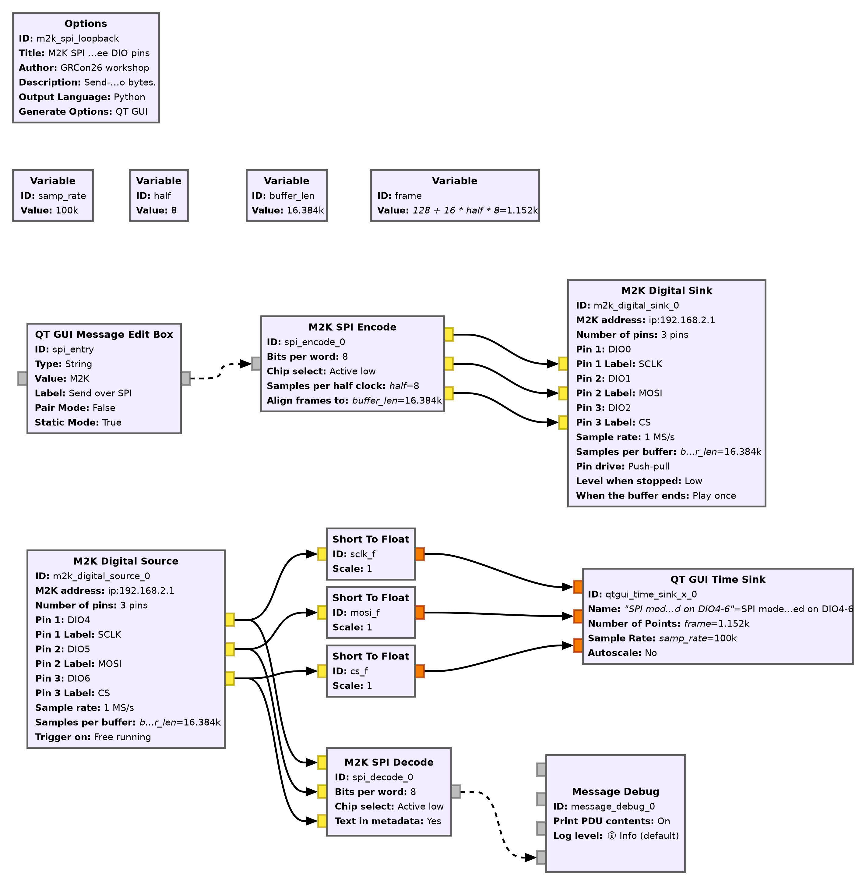
m2k_spi_loopback.grc. The empty band is real, because the variables sit a screen above the graph.This is not a drawing of the flowgraph. It is the flowgraph:
slides/render_grc.py loads the same .grc a
participant opens and hands it to GRC's own Cairo canvas code, so the
fonts, the colors, the port shapes and the wire routing are the ones
that will be on their screen. A diagram would have started drifting the
first time a parameter changed.
Two things to read off it before we take it apart. Solid arrows carry samples; dashed arrows carry messages — so the two dashed ones, into the encoder and out of the decoder, are the two places a human or a print statement touches this graph. And the graph is in two halves that do not connect. Nothing on this canvas joins the Digital Sink to the Digital Source.
The half of it that is not on the canvas
A stuck participant is usually here. The flowgraph is complete and correct with nothing wired up at all — GRC will validate it, generate it and run it. The wire closes the loop outside the software, and the only thing that reports a missing jumper is a decoder that never prints.
It is also why the two halves have separate rates, separate buffer
sizes and separate pin lists that have to agree with each other by
hand. Nothing in the graph can check that a jumper joins DIO0 to DIO4.
bench/dio_continuity.py is what checks it.
Four variables, and the arithmetic between them
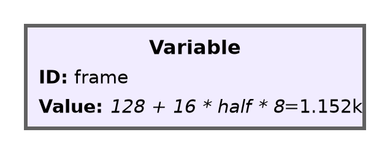
The flowgraph computes frame; nobody types it. The old one hard-coded it
at 256 and any other half silently mismatched the buffer.
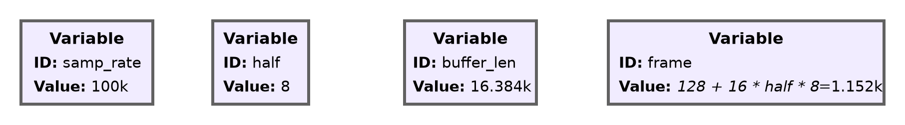
What each one is for:
| variable | value | why |
|---|---|---|
samp_rate | 100000 | the DIO clock, 100 kS/s |
half | 8 | samples per half clock → 6.25 kHz bus |
buffer_len | 16384 | the sink's DMA buffer |
frame | 128 + 16*half*8 | one transaction, in samples |
The arithmetic: 128 samples of quiet either side (64 lead-in, 8 setup, 8
tail, 48 idle after) plus 16 samples per bit × 8 bits × one byte's worth
of half-clocks. Change half live in a running flowgraph and the frame
length follows it — GRC recomputes variables in dependency order, so everything downstream is fresh before anything uses it.
100 kS/s is the rate this graph has been run at, twenty sends clean. Nothing in the repo yet knows where send-on-demand stops holding; raising it a step at a time and recording where it breaks is an open item.
QT GUI Message Edit Box
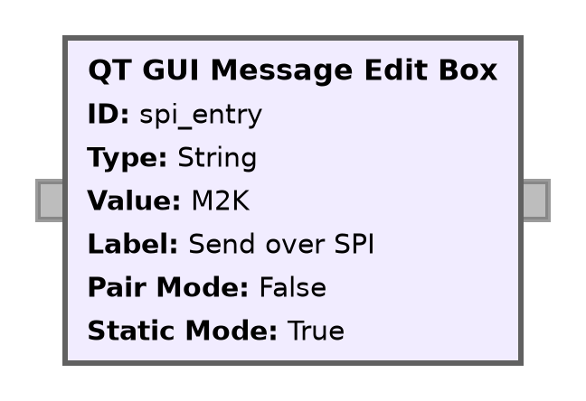
This is the only thing in the graph a human touches.
- Type, press Enter, one message leaves
- Nothing repeats — the bus rests between sends
Its parameters:
| parameter | value |
|---|---|
| Label | Send over SPI |
| Type | string |
| Is Pair | False — the message is the payload |
| Is Static | True |
| Default | M2K |
Every setting after this one follows from this block. This is send on demand: nothing repeats, the bus rests at idle between messages, and a transaction happens because a person asked for one.
The alternative — and the version we built first — is a cyclic
buffer the hardware repeats forever. We keep it as
m2k_spi_loopback_continuous.grc, because it is the easier thing to get
running and it makes a lovely scope trace. But the hardware repeats a cyclic buffer, and nothing downstream can gate it. You cannot send one
message.
M2K SPI Encode
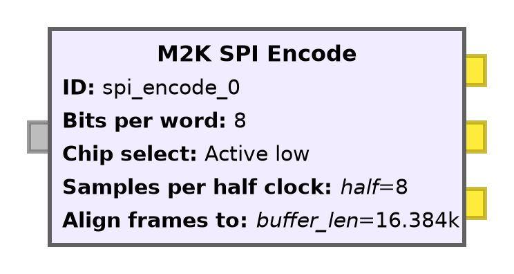
Message in, three sample streams out. It never touches the board — the arithmetic imports nothing.
What each parameter is for:
| parameter | value | what it means |
|---|---|---|
| Bits per word | 8 | a byte |
| Chip select | active low | unless a datasheet says otherwise |
| Samples per half clock | half | the bus speed |
| Align frames to | buffer_len | the sink's buffer — see below |
Four more parameters set the quiet either side of the clocked bits, in
samples: 64 / 8 / 8 / 48 for idle-before, CS-to-first-clock,
last-clock-to-CS and idle-after. Those are the five rows of the frame
budget two frames back.
It is a source with no stream input, and that is the design decision worth explaining. Between messages it produces idle — clock low, data low, CS released — for as long as anyone asks, so the Digital Sink downstream never starves and the sink's blocking push is what paces the whole graph. The encoder queues a message that arrives mid-buffer rather than dropping it.
Align frames to is the one parameter that exists because of
the hardware. A non-cyclic Digital Sink hands the board one DMA buffer
at a time and the board need not join them seamlessly, so a frame lying
across a buffer seam can tear in the middle. Nothing downstream can see
where those seams are — but the encoder's own sample count is the
sink's position in its buffer, because every sample it produces reaches the
sink in order and the sink pushes every buffer_size of them. So it
holds a queued frame until the next boundary and starts it there.
Set it to the sink's buffer size whenever the sink is not cyclic, and leave it 0 otherwise.
The encoder drops a word too wide for the bus with a warning rather than raising an error: a mistyped message should not end a run somebody is halfway through.
M2K Digital Sink
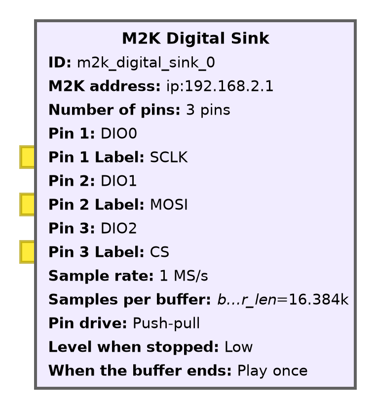
The two directions never share a rate. -tx and
-rx hold separate sampling_frequency, and neither
complains.
The parameters, in full:
| parameter | value |
|---|---|
| M2K address | ip:192.168.2.1 |
| Sample rate | 1000000 — the -tx rate |
| Number of pins | 3 |
| Pin 1 / 2 / 3 | DIO0 / DIO1 / DIO2 |
| Labels | SCLK / MOSI / CS |
| Cyclic | False — send on demand |
| Buffer size | buffer_len |
| Drive / idle level | push-pull / low |
The buffer size here is the number Align frames to on the encoder
has to match. They are one setting split across two blocks; a mismatch tears
a frame at a seam that nothing else in the graph can see.
At rest the digital sink is the opposite of the generator. The
DAC holds its last cyclic buffer; DIO pins snap back to raw. The idle
level parameter is what decides where they snap to, and for an idle-low
clock that answer is low.
The rate here is 1 MS/s on the pins while samp_rate in the graph is
100 kS/s. Those are different clocks: the graph's variable paces the
time-sink display, and the pin rate is what the board's -tx device is
set to.
Three jumper wires
This is the only part of the loopback that is not software.
A pin is an input or an output. Wire two driven pins together and both blocks come up happily.
If a jumper is in doubt, bench/dio_continuity.py walks a single 1
across the driven pins and prints a 3×3 table. It takes ten seconds and it
has settled more arguments than it ought to have.
This is also the moment to say what the loopback is for. It proves the whole chain — encoder arithmetic, DMA out, the pins, DMA in, decoder arithmetic — with no second board and no peripheral to misconfigure. When it works, everything that is left is the peripheral.
M2K Digital Source
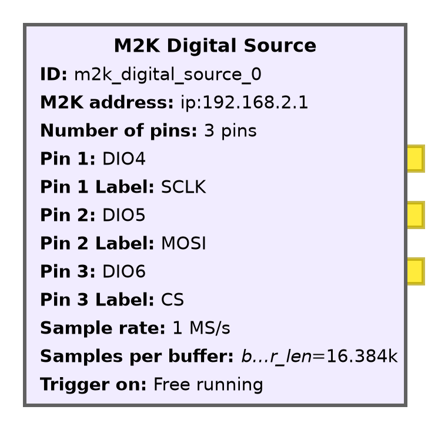
Do not trigger this. gr-iio's device_source returns
WORK_DONE on any refill error — including a timeout. One message
decodes, and the capture never comes back.
The parameters, in full:
| parameter | value |
|---|---|
| M2K address | ip:192.168.2.1 |
| Sample rate | 1000000 — the -rx rate |
| Number of pins | 3 |
| Pin 1 / 2 / 3 | DIO4 / DIO5 / DIO6 |
| Labels | SCLK / MOSI / CS |
| Buffer size | buffer_len |
| Trigger pin | off |
People get this setting wrong more often than any other in the graph. The board has a digital trigger, it works, and arming it on CS falling is exactly what you would do with a logic analyzer. It is also what makes a send-on-demand graph die the first time nobody types anything for a moment.
The mechanism: work() returns WORK_DONE on a timeout, which
ends the block, which ends the flowgraph's source. And
set_timeout_ms stores its value and never hands it to libiio, so there
is no knob to turn either.
Free-run the source. Trigger the display.
Which loses nothing, because CS does the framing in software anyway — that is what the decoder does. The trigger belongs on the QT time sink, where a missed edge means a scruffy plot rather than a dead capture.
M2K SPI Decode
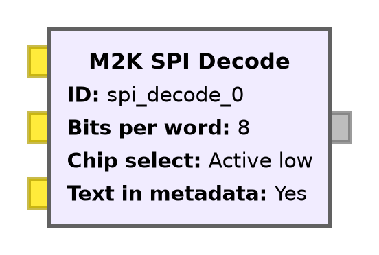
Three streams in — SCLK, MOSI, CS. One message out.
Holds no context, writes no attribute, never touches the board.
Its three parameters:
| parameter | value | what it means |
|---|---|---|
| Bits per word | 8 | 12 and 16 are real widths; 8 is a byte |
| Chip select | active low | must match the encoder |
| Text in metadata | Yes | the bytes as characters, beside the hex |
The message carries the bytes and their reading. The payload
is the words that were on the wire; the metadata carries the same words as
text. So a Message Debug prints both, and the text line is the quickest
proof that a loopback carried what somebody typed. Bytes outside printable
ASCII come out as \xNN, not as dots — the block discards nothing. Above 8
bits per word there is no text to give and the block adds none.
The decode itself is a separate module that imports nothing:
m2k_blocks/spi_decode.py is plain Python, no GNU Radio and no numpy,
so we test it in an ordinary interpreter. That split also turned up the one
performance fact that matters here: indexing a numpy array element by
element from Python takes 0.84 s per million samples against 0.04 s for a
list, so the wrapper calls .tolist() first and 1 MS/s stays
comfortable.
It has to hold its state across work() calls that land wherever the
scheduler puts them — a half-built word, mid-frame, split across two buffer
boundaries. That is a different claim from decoding a capture offline, and
it is what section 11 of the checklist tests.
Message Debug, and the trace beside it
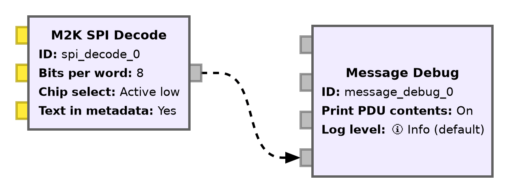
((text . M2K))
pdu length = 3 bytes
pdu vector contents =
0000: 4d 32 4b- Beside it: three Short To Float into a QT GUI Time Sink
- Three traces — SCLK, MOSI, CS
- Trigger the display on CS, falling, normal
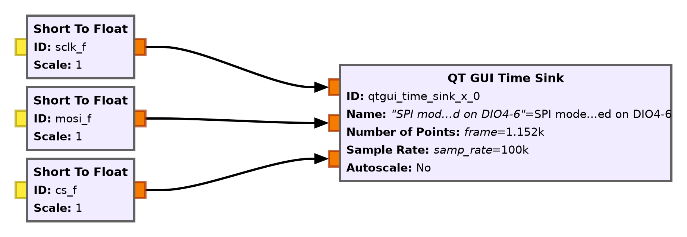
The time sink's trigger is where the trigger belongs. Channel 2 is CS, the slope is negative, and normal mode means the display holds its last frame rather than free-running — so a transaction that happened four seconds ago is still on screen when somebody looks up.
The window is frame samples wide, which is exactly one transaction.
Change half and the window follows, so the trace keeps filling the
screen instead of shrinking into a corner.
gr-iio carries short samples in both directions — raw counts, never volts — so Short To Float is what makes a number the time sink can plot. On the analog side a multiply follows that same conversion, and that multiply is the entire counts-to-volts story in one block.
Run it
A loopback, the way it failed the first time, and an opinion from a decoder nobody here wrote.
Demo: the loopback
source gr-m2k/env.sh
gnuradio-companion flowgraphs/m2k_spi_loopback.grcType into the box. Press Enter. One transaction goes out; the bus rests at idle until you send again.
2026-09-04: twenty sends with varying text, one print each, clean at 100 kS/s — which also proves an untriggered capture is not gapped.
What to watch for, in order.
- Nothing prints between the flowgraph starting and the first CS falling edge. A byte appearing before the first frame boundary would mean the decoder is emitting from a partial frame — exactly the failure the arming rule exists to prevent.
- The printed string changes without a restart.
- The trace shows MOSI settling while SCLK is low, and CS low across the whole message rather than once per byte.
- Change
halfto 4 and then 16. The bus speed changes, the frame length follows it, and the string still comes back.
Watch for the flowgraph falling behind rather than for wrong bytes. If the source starts reporting underruns, look at whether something is handing the decoder a numpy array element by element.
The headless version is python3 bench/spi_flowgraph.py — same three
blocks, a collector standing in for Message Debug, and
--csv PATH to write the capture out.
The first run failed, and how is the point
- Every byte correct.
M2K,2KM,KM2 - 1978 chunks, 5958 bytes, zero not in the message
This is not corruption. A fair coin is deciding where each capture begins.
A triggered capture re-arms per buffer. CS per byte put an arming edge in front of every one.
Chunk sizes {3: 1975, 6: 2, 21: 1}; chunk starts M 689 / 2 649 /
K 640. Uniform. The diagnostic that made it obvious was counting what was
not in the message and finding nothing — a corruption story cannot
survive that number being zero.
The cause is two halves of the design meeting. The M2K's non-cyclic digital capture leaves a gap between buffers: it fills one, hands it over, and re-arms. A triggered source re-arms on the trigger, so every buffer starts at a CS falling edge — and the frame, at that point, put a CS falling edge in front of every byte. The decoder reported exactly what the hardware handed it.
The fix is the waveform, not the code. Hold CS low across the
whole message, so one frame is one transaction and the only falling edge in
the frame is the message start. That is also what real SPI does, so the fix teaches the same thing. SpiDecoder needed no change — it already
abandons a part-built word at CS release and clocks straight through a
multi-byte window.
test_the_frame_asserts_chip_select_exactly_once now pins it. It is
the only test that would have caught this without a board, and it did not
exist until the board found it.
Confirmation: sigrok-cli / PulseView
- Our encoder and decoder agree with each other
- Both written from the same three sentences
A shared misreading round-trips perfectly and is still wrong on a real bus.
sudo apt install sigrok-cli
pytest tests/test_spi_sigrok.py -q
sigrok-cli -i bus.csv \
-I csv:header=true:samplerate=1000000 \
-P spi:clk=clk:mosi=mosi:cs=cs:cpol=0:cpha=0 \
-A spi=mosi-dataWritten by people who have never seen this repo, which is the entire
point of asking them. 23 tests, all passing against sigrok-cli 0.7.2 /
libsigrokdecode 0.5.2.
They skip cleanly where it is not installed, and nothing here touches the
board — SpiEncoder imports nothing, so this runs anywhere.
What it reads. M2K comes back 4D 32 4B, and so
does all 256 bytes in one transaction, four bus speeds, an active-high chip
select, 12- and 16-bit words, and a frame with 4096 idle samples either
side — which also confirms that the idle levels carry no bytes, because sigrok finds none in them.
Both decoders on the same samples. Six frames built with every half clock a different random length — something our encoder never emits — and ours and sigrok's read the same words. A decoder quietly counting samples instead of watching edges fails this; ours does not.
The open item is that this checks the encoder, not the board.
bench/spi_flowgraph.py --csv writes what the M2K captured in the same format, so the hardware half is the same command against a real
capture.
The negative control
A harness that cannot fail has not checked anything.
- Four runs tell sigrok the wrong thing
- Each must come back with something other than
4D 32 4B
| told | reads |
|---|---|
bitorder=lsb-first | B2 4C D2 |
cpha=1 | 9A 64 96 |
cpol=1 | 9A 64 96 |
cs_polarity=active-high | nothing |
Those are exactly the three misreadings that would have round-tripped cleanly through our own tests: bit order, clock phase, clock polarity. Each one now produces a specific wrong answer that the harness asserts on.
One more detail that is easy to get wrong in a test like this: an unknown
option name makes sigrok-cli exit 1 and decode nothing, which looks
exactly like a quiet bus. So the harness asserts on the exit code rather
than on empty output — otherwise a typo in the negative control would pass
it.
Two applications
Where the same three ideas — a rate, a range, and a conversion — go next.
Ultrasonic FSK, over the air
- 200 baud, two tones 600 Hz apart
- W1 drives the transmitter, 1+ reads the receiver
- Between them, four inches of air
We transmit at 750 kS/s and receive at 1 MS/s, so there is no samp_rate.

Every other flowgraph in this workshop has one samp_rate.
This one cannot, and the reason is the hardware. The DAC counts its rates
down from 75 MS/s and the ADC counts down from 100 MS/s, so the
two ladders share almost no rungs. 750 kS/s is a rung on one of them
and 1 MS/s is a rung on the other, and there is no value that is a
rung on both and also fast enough for 41 kHz.
Ask for a rate that is not on the ladder and libiio does not refuse — it gives you the nearest one it has, and every count derived from the number you asked for is then wrong by that ratio. So the two rates are separate variables, and we compute everything downstream from whichever rate it belongs to.
tx_repeat is tx_rate * bitlen: 3750 samples
hold one bit for one bit time at 750 kS/s. sps is
sym_rate * bitlen: 25 samples per bit after the receiver has
decimated down to 5 kS/s. It is the same bit in both places, counted in
different units.
The flowgraph is flowgraphs/m2k_ultrasonic_fsk.grc, and
flowgraphs/README.md has the wiring, and it says what we have
checked and what we have not.
It does not resonate at 40 kHz

bench/ultrasonic_sweep.py took both sweeps.- f0 is 40.755 kHz, not 40.0
- The −6 dB band is 1023 Hz wide
- Driving 40.0 kHz loses 9.8 dB
A wrong frequency looks exactly like a demodulator that will not lock.
How the level is read. Correlating the capture against the known drive frequency rejects everything that is not at it, which is what makes millivolts measurable at all. It does not reject crosstalk, because crosstalk is at exactly that frequency — drive coupling through the shared ground. So the sweep is read against two floors: a noise floor with the drive off, and a crosstalk floor taken with the transducers turned away from each other. On this bench that second floor is 8.4 mV.
The second curve is the control. A peak in a room can be a standing wave rather than a transducer, and a standing wave moves when the spacing changes. Doubling the spacing to eight inches moved the level — 1.388 V down to 0.704, which is 1/r to within two percent — and left the peak where it was.
Where the tones go. The flowgraph derives them, so re-sweeping and changing one number moves both:


Carson's rule puts the occupied bandwidth near 1000 Hz, which almost fills the 1023 Hz band. Widening the spacing separates the tones and improves the noise margin on each one, but it also pushes both of them further down the skirts, and the skirts on this pair are steep.
Bits into a tone

- The frame is one byte vector, sent over and over
- Unpack turns each byte into eight bits
- Repeat holds each bit for 3750 samples
Repeat. A bit is a duration, and Repeat is the block
that gives it one. Nothing before it has a sample rate in it — the vector source emits bytes as
fast as the graph will take them. tx_repeat is the only place
the transmit rate enters, and it is what makes 200 baud 200 baud.
What comes out of Repeat is a stream of 0 and 1 as unsigned bytes. The VCO wants a float between 0 and 1 scaled so that those two values land on the two tones:

fmark.The VCO's sensitivity is 2*pi*fmark radians per second per
unit of input, so an input of 1.0 is fmark and an input of
fspace/fmark is fspace. The multiply sets the
span and the add sets the floor. Written as fractions rather than as two
numbers, so changing f0 moves both tones and neither constant
needs touching.

Cyclic would be easier and wrong here. We push a cyclic buffer once and
the hardware repeats it forever, which quantizes the frequency to
multiples of rate/N and keeps driving the transducer after
the graph stops. Non-cyclic pushes every buffer, so
Unable to push buffer means the graph fell behind rather than
meaning nothing at all.

The transmitter pads every payload to msg_capacity, so every
frame is the same length. That matters at the far end, where a fixed frame
length is what lets the receiver discard the next frame's sync word.
Decimate, then demodulate

- Shift f0 to zero, filter, drop 199 samples in 200
- 1 MS/s becomes 5 kS/s
- Then frequency becomes a level
Design the taps at the input rate.
Why decimate first. 1 MS/s against a 1023 Hz channel is almost all empty spectrum, and every block after this one would have to process it. Decimating by 200 leaves 5 kS/s — twenty-five samples a bit, which is plenty for a timing recovery loop and light enough that the whole receiver runs in a fraction of a core.
The trap in this block. Frequency Xlating FIR Filter
decimates, so it has two rates, and the taps belong to the input one:
firdes.low_pass(1.0, rx_rate, 600.0, 600.0). Design them at
5 kS/s and the cutoff lands two hundred times too low, which reads as
a dead channel. The block also takes Center Frequency and
Sample Rate separately — both refer to the input.
Quadrature demod. Its gain is
sym_rate / (2*pi*(spacing/2)), which is the number that makes
a ±300 Hz deviation come out as ±1.0. If the gain is
wrong the eye is still open, only at the wrong height, and the slicer at
the end still needs the level centered on zero. The two symmetric tones
are what center it.

This is the block the offline bench script did not need. A script that generated its own samples knew where every bit started; a receiver listening to a transducer does not. Symbol Sync finds the sampling instant and tracks it as the two clocks drift apart.
Zero crossing is the detector here because the signal at this point is real-valued and binary — the eye crosses zero between opposite bits and the crossing is the timing information. Gardner and Mueller & Müller were both tried against synthetic frames from 30 dB down to 0 dB, at four sampling offsets and clock errors to ±2000 ppm; all three recovered every frame, and zero crossing is the one that needs no constellation object.
Where the byte boundary comes from

- A bit stream has no bytes in it
- Every frame starts with the same 32 bits
- Correlate on those, tag the hit, align to the tag
The transmitter sends the byte boundary.
The slicer emits one bit per symbol and nothing else. Pack eight of them and you get a byte — but a byte starting wherever the graph happened to begin, which is seven times out of eight the wrong place. Nothing downstream can tell, because a wrongly aligned byte is still a byte.
The access code is 0x1ACFFC1D, the CCSDS
attached sync marker. It correlates badly against shifted copies of
itself, so a false hit needs a specific 32-bit accident rather than any
long run of ones. Threshold 0 rejects any match carrying a bit error, and
this link is clean enough that it rejects nothing real.
Correlate Access Code Tag does not remove the code — it drops a tag on the sample after it. Tagged Stream Align is what acts on that: it discards everything before the first tag, so the stream handed on begins on a byte boundary.

Once aligned, the stream repeats: sync bytes, then payload, then sync
bytes again. Keep M in N keeps msg_capacity of every
frame_len bytes, which is the payload alone — and that only
works because the transmitter pads every message to the same length.
Stream to Tagged Stream and Tagged Stream to PDU then turn the bytes into
a message, which is what Message Debug prints.
***** MESSAGE DEBUG PRINT PDU VERBOSE *****
pdu length = 8 bytes
pdu vector contents =
0000: 47 52 43 4f 4e 32 36 20What it has done, and what it has not
| on the bench | |
|---|---|
| bits sent | 395 |
| bit errors | 0 |
| underruns | 0 |
| spacing | 4 in |
| level at 1 m | ~143 mV |
Not yet checked: this flowgraph on a board, range past four inches, off-axis falloff, and twenty stations in one room.
The 2026-09-09 run was bench/ultrasonic_fsk.py, which is
the same chain as the flowgraph written as a script: W1 out, 1+ back,
message decoded in the same process. 395 bits, no errors, no underruns at
750 kS/s non-cyclic.
The 143 mV at one meter is a projection, not a measurement. It is 1/r extrapolated from the two spacings we measured. Against an 8.4 mV crosstalk floor that is 24 dB of margin, which is why a room-scale link looks plausible.
What the tests cover.
tests/test_grc_integration.py builds the flowgraph, checks the rates and
the frame arithmetic survive code generation, and runs the whole receive
chain in-process against synthetic FSK with a deliberate sample offset —
twelve frames, every one decoded. None of that puts it in front of a
transducer.
Twenty stations in one room. Twenty transmitters each radiating 41 kHz into the same air is not something a bench with one pair can answer. The fallback is one transmitter at the front and twenty receivers, which also halves the wiring each participant has to get right. Time-of-flight ranging is the stretch goal if the link lands early.
Three colors at once

- Red, green and blue chopped at three frequencies, all lit together
- One FFT separates them again
- Two photodiodes: one sees the cuvette, one does not
Nothing is switched on and off in turn.
The board is ADI's M2k Colorimeter Accessory Board, out of
education_tools — not the CN0363, though it borrowed the CN0363's
cuvette holder. Four PCBs: a main board on the digital header, an RGB LED
riser, two photodiode risers, and the holder. There is no ADC on it and no
driver for it. It is a passive analog front end, and every sample comes
through the M2K's own m2k_analog_source.
The naive way to measure three colors is to light them one at a time. That works and it is three times slower, and any drift between the three measurements — the lamp warming, a hand near the bench — lands in the answer as color. Chopping each color at its own frequency and lighting all three together means the three measurements happen in the same 41 ms, through the same optics, against the same reference.
The DIO bit steers, it does not gate. DIO13, 14 and 15
are the select lines of a triple SPDT, and each one sends its color's
current to LED riser 0 (J5) or riser 1 (J6). Only J5 is populated, so low
is lit and high is dark. Which is why idle_level is
high: idle it low and the LED sits on white whenever the
flowgraph is stopped.

The rails are not garnish. The LED common anodes sit directly on V+, so
m2k_power_supply is the first block in the file — without it,
no light and no gain, which looks exactly like a dead board.
5004.9 Hz, not 5 kHz

| cycles | bin | Hz | |
|---|---|---|---|
| red | 205 | 205 | 5004.9 |
| green | 246 | 246 | 6005.9 |
| blue | 287 | 287 | 7006.8 |
A whole number of cycles per buffer is a whole number of bins.
4096 samples at 100 kS/s is a 24.4140625 Hz bin. Put K whole cycles in that buffer and the tone is at K × 24.4140625 Hz, which is exactly bin K of a 4096-point FFT at the same rate. So the frequency plan is not three frequencies, it is three integers.
This works because the pattern generator and the ADC run off one clock. Measured on this board, the peak stays on its own bin and the phase holds to better than 0.02 ppm over a minute. Nothing aligns the buffers and nothing triggers the capture: any 4096 consecutive samples are a whole number of cycles of all three tones, so every capture buffer is a valid measurement on its own.
That is also why the FFT window is rectangular. A window exists to taper energy that falls between bins, and here none does. Applying a Hann window would spread each tone over three bins and throw away the thing that was arranged for.
What the left panel admits. It is not bare either side of 205. A square wave's edges can only land on sample boundaries, so the duty cycle wobbles by a fraction of a sample and puts spurs about 26 dB down at bins 201 and 209. They matter not at all, because they land on no other color's bin — whereas the round-number version reaches green's bin 246 at −47 dB, which is a red LED reporting itself as green.
A DFT bin is a lock-in amplifier

X[k] = Σ x[n] e−j2πkn/N- Multiply by a reference, integrate — that is a lock-in
- Goertzel is one bin of it, six times over
Room lights are not at 5004.9 Hz, so they are not in bin 205.
A lock-in amplifier multiplies the incoming signal by a reference at the modulation frequency and integrates the product. Everything not at that frequency averages toward zero; what remains is the amplitude of the part that was modulated. It is the standard instrument for pulling a small signal out of a large background.
The sum above is that operation, written down. e−j2πkn/N
is the reference, the sum is the integration, and one value of k
is one lock-in tuned to one frequency. GNU Radio's Goertzel
block computes a single bin directly and returns
|X[k]|/N — checked against numpy to fourteen digits. Six of
them, two channels by three colors, is six lock-in amplifiers.
Room lights fall out for free. Daylight is DC and sits in bin 0. Mains flicker is 120 Hz and sits near bin 5. Neither is in bin 205, 246 or 287, so neither reaches the answer — no shroud, no dark room, no subtracting a background frame.
The Goertzel length is nfft and so is the source's
buffer_size, deliberately. Each measurement is then exactly one
capture buffer and never straddles two, so no reading spans the gap between
one buffer and the next.
What it reads
| transmittance | red | green | blue |
|---|---|---|---|
| empty cuvette | 100.1% | 97.4% | 98.8% |
| blanked | 100.0% | 100.0% | 100.0% |
| green filter | 9.3% | 66.0% | 24.4% |
It passes green, attenuates blue, kills red. Which is what a green filter is.
An empty beam is not 1.0. The splitter does not split evenly and the two photodiodes are not the same part twice. Blank first, or every reading is tilted.
Blanking is three numbers — 1.0053, 0.9757, 0.9911 — measured once with empty cuvettes in both wells and divided back out. After that an empty beam reads 100.0% on all three and holds to about 0.06% peak to peak, which is roughly three decades of usable range. The green strip repeats to 0.3% across half a dozen insertions.
That steadiness is the coherence result being drawn on: one bin, no window, no averaging across neighbours, 41 ms of integration.
Those three numbers describe one afternoon's alignment, so the GUI carries a Blank button: empty both wells, press it, and whatever the two paths are doing now becomes 100%. The check that it took is already on the screen — all three go to 100.0% and the box reads nothing in the beam.
From three numbers to one word. "Green" is a decision, not a measurement, and no block in the library makes it, because none of them knows what your thresholds mean. So the chain ends in about fifteen lines of embedded Python: three floats in, one word out on a message port, into a text box. The rule is which one is largest, guarded either side — all three above 85% is nothing in the beam, all three below 5% is opaque, and a winner inside 1.3× of the runner-up is mixed rather than a color. Without the guards an empty beam reports a color and so does a closed shutter, because something is always largest.

The exercise. Make it name seven. Magenta passes red and
blue, yellow passes red and green, cyan passes green and blue — so the rule
stops being a winner and becomes a three-bit pattern of which colors clear a
threshold. ADI's own exercise for this board stops at a
# Purple Detector comment with nothing underneath it.
One board, so this is a demo at the front rather than a station each. The flowgraph, the bench script and the numbers above are in the repo, so it can be read afterwards by people who never touched it.
If you keep four things
real = (raw + offset) × scale, and the ABI fixes the unit.- An instrument is several IIO devices. One block writes to one.
- When the hardware publishes the legal values, the list wins.
- Check your decoder against one you did not write.
Everything in this deck is in the repository, including the bench checklist that says which claims we measured and which are still assumptions.
The fourth is the one that generalizes furthest beyond this hardware. Encoder and decoder written from the same sentences will agree with each other perfectly and can both be wrong; the only way out is an independent implementation of the same spec. For SPI we used libsigrokdecode, and it took an afternoon.
The block-design rules are the same idea pointed at a user interface: a parameter that cannot express an illegal value cannot be set to one, and a dropdown built from the hardware's own list cannot drift from it.
Where things are
The repository
Reading IIO attribute names
docs/reading-iio-attributes.md — the participant handout, generated by iio_explain.py --glossary
The block reference
gr-m2k/README.md — every parameter, and what it quietly becomes
The bench checklist
docs/bench-checklist.md — 16 sections, what passed and what it cost
The multi-pin sink note
docs/gr-iio-multipin-sink.md — why the digital sink had to be written
The flow graphs
flowgraphs/ — blinky, LED PWM, loopback, scope, SPI, ultrasonic, colorimeter